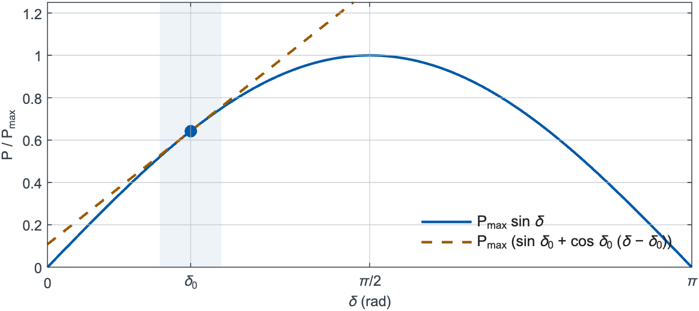
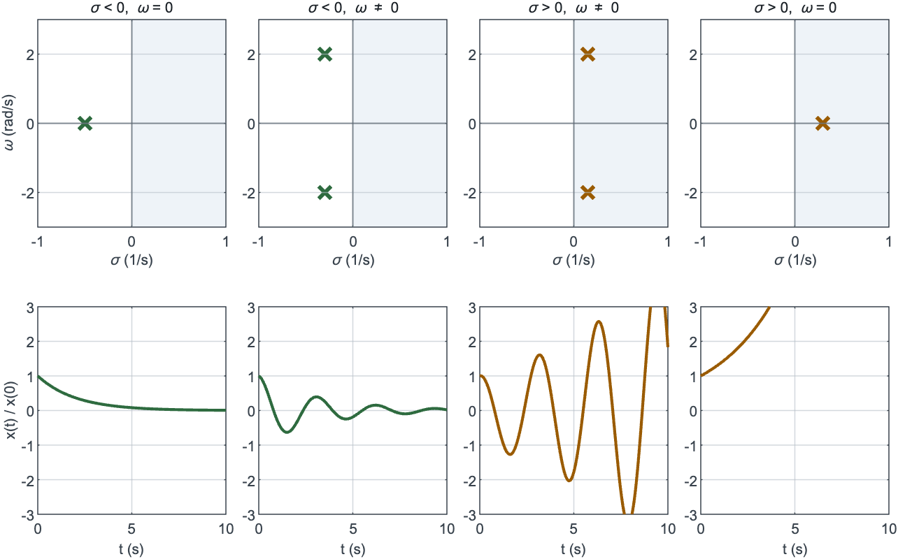
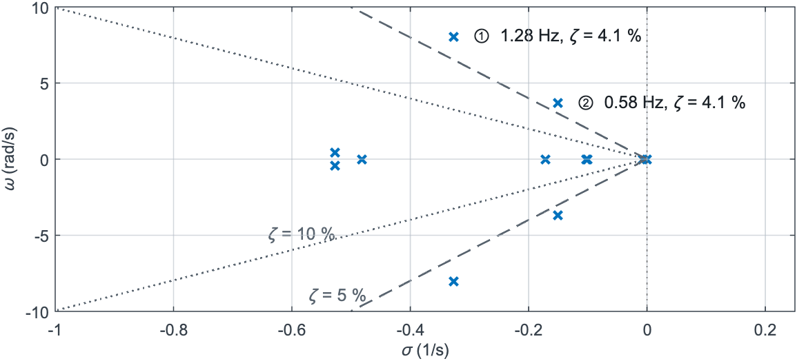
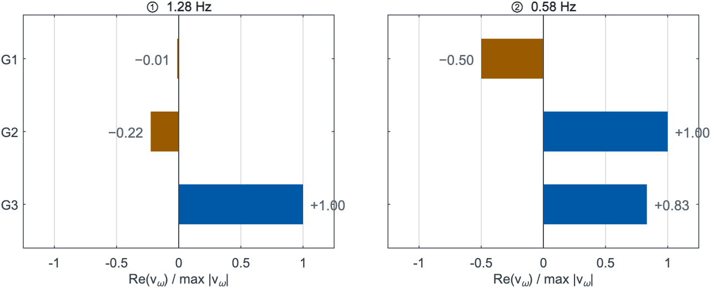
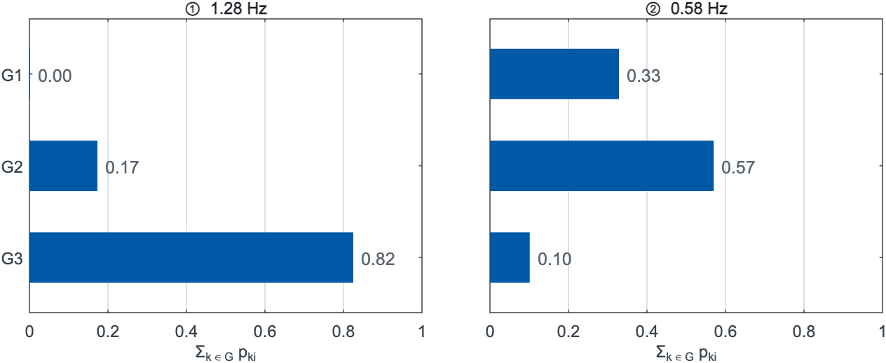
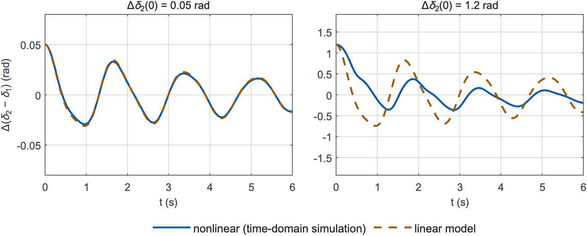
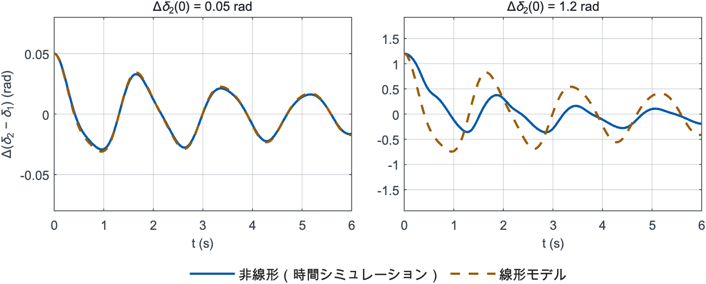

What this Part coversこの Part の内容
- Why a small swing around an operating point can be described by a linear model, and what the state-space model is.
- 運転点のまわりの小さな揺れが線形モデルで表せる理由と、状態空間モデルの形。
- That each eigenvalue is one type of swing, and how to read it in the complex plane: stability, frequency and damping ratio.
- 固有値の 1 つ 1 つが揺れの型であることと、複素平面での読み方（安定かどうか、周波数、ダンピング比）。
- The kinds of oscillation modes (local and inter-area), mode shapes and participation factors, with IEEE 9-bus as the example.
- 振動モードの種類（局所モード・地域間モード）、モード形、参加係数。IEEE 9 母線系統を例にします。
- Where the linear model stops being accurate: large swings.
- 線形モデルが合わなくなるところ（大きな揺れ）。
Small swings can be drawn with straight lines小さな揺れは直線で近似できる
A power system is described by nonlinear equations. The best-known one is the power sent over a line: it follows a sine curve of the phase difference δ between the two ends. Solving such equations needs a time-domain simulation, and its result is a single trajectory for a single disturbance.
電力系統は非線形の式で表されます。よく知られているのが送電線で送る電力で、両端の位相差 δ に対して正弦波の形の曲線になります。このような式を解くには時間シミュレーションが必要で、その結果は 1 つの外乱に対する 1 本の軌道です。
If we only look at a small range around the operating point, the curve is almost a straight line: its tangent. Replacing every curve of the model by its tangent at the operating point is linearization. The linear model holds for small swings only, but it can be studied with the tools of linear algebra, and it tells us how the system swings for any small disturbance at once.
運転点のまわりの狭い範囲だけを見れば、曲線はほとんど直線（接線）です。モデルのすべての曲線を運転点での接線に置き換えることを線形化といいます。線形モデルが使えるのは小さな揺れだけですが、線形代数の道具で調べられ、どんな小さな外乱に対しても系統がどう揺れるかを一度に教えてくれます。

The same is done for all equations of the model at once. We write the state of the system as a vector x (rotor angles, speeds, internal voltages, the states of the controllers) and its equations as ẋ = f(x). At an operating point x₀ nothing moves, f(x₀) = 0. For the deviation Δx = x − x₀, a Taylor expansion of f around x₀ gives
同じことを、モデルのすべての式についてまとめて行います。系統の状態（回転子の角度、回転速度、内部電圧、制御器の状態など）をベクトル x で表し、その式を ẋ = f(x) と書きます。運転点 x₀ では何も動かないので f(x₀) = 0 です。ずれ Δx = x − x₀ について、f を x₀ のまわりでテイラー展開すると次のようになります。
- This is the A matrix of the state equation!これが状態方程式の A 行列！
- The rest of second order and higher: dropped捨てる 2 次以上の残り
- Slopes at the operating point: the Jacobian運転点での傾き（ヤコビアン）
The linear model keeps the first term, Δẋ = A Δx, and drops the rest, which is of second order in Δx: this is why it is accurate only for small swings. Each entry of A is the slope of one equation with respect to one state, taken at the operating point. A matrix of such slopes (partial derivatives) is called a Jacobian. Because A is computed at x₀, a different operating point gives a different A.
線形モデルは最初の項 Δẋ = A Δx だけを残し、Δx について 2 次以上の残りを捨てます。これが、小さな揺れでしか正確でない理由です。A の各要素は、運転点での「ある式の、ある状態に対する傾き」です。このような傾き（偏微分）を並べた行列をヤコビアンといいます。A は x₀ で計算するので、運転点が変われば A も変わります。
The state-space model状態空間モデル
To also see what we can push into the system and what we can measure, the linear model is written as a state-space model. The input u is what we can change from outside (for example a reference voltage or a mechanical power), and the output y is what we observe (for example a voltage or a speed).
外から加えられる量と測れる量も含めるために、線形モデルを状態空間モデルの形に書きます。入力 u は外から変えられる量（たとえば電圧の目標値や機械入力）、出力 y は観測する量（たとえば電圧や回転速度）です。
- This is the A matrix: how the system moves by itself!これが A 行列：系統がひとりでにどう動くか！
- How the inputs act on the states入力が状態にどう効くか
- What is observed of the states状態のどこを観測するか
- Inputs that reach the outputs directly入力が出力へ直接届く分
Here x, u and y all mean deviations from the operating point; the Δ is dropped as is usual. The four matrices have simple roles, shown in the block diagram below.
ここでの x、u、y はすべて運転点からのずれを表します（慣例どおり Δ を省いています）。4 つの行列の役割は、下のブロック図のとおりです。
- A (state matrix)A（状態行列）
- How the states pull on each other: the swing of the rotors, the response of the field and of the controllers. It alone decides stability.
- 状態どうしの引っぱり合いです。回転子の揺れ、界磁や制御器の応答を表します。安定かどうかは A だけで決まります。
- B (input matrix)B（入力行列）
- Which states an input moves, and how strongly.
- 入力がどの状態を、どれくらい動かすかです。
- C, D (output matrices)C、D（出力行列）
- How the measured quantities are made from the states (C) and directly from the inputs (D).
- 測る量を状態から（C）、入力から直接（D）どう作るかです。
In a power system some equations have no time derivative: the current balance at each bus, for example. GUILDA keeps them: get_sys linearizes the model in the states x, the bus voltages v (real and imaginary parts) and the inputs u as
電力系統には、各母線での電流のつり合いのように時間微分を含まない式もあります。GUILDA はこれも含めて、状態 x、母線電圧 v（実部と虚部）、入力 u について、get_sys で次のように線形化します。
The second equation is the current balance of the buses. Solving it for v (Avv is invertible) and substituting gives the model that get_sys returns by default (Type "ODE"):
2 つ目の式が母線の電流のつり合いです。これを v について解いて（Avv は正則）代入したものが、get_sys が既定で返すモデル（Type "ODE"）です。
- Coupling of the components through the network送電網を通した機器どうしの結合
- Diagonal; its zero rows are algebraic equations対角行列：0 の行は代数方程式
E is diagonal. Where it is zero, the row is again an algebraic equation (some internal variables of the AVR and PSS), so the eigenvalues are the finite solutions of det(λE − A) = 0, which MATLAB gives as eig(A, E). The idea of this page is the same in both forms.
E は対角行列です。その 0 の行は、やはり代数方程式です（AVR や PSS の内部の変数の一部）。そのため固有値は det(λE − A) = 0 の有限な解で、MATLAB では eig(A, E) で求まります。このページの考え方は、どちらの形でも同じです。
Eigenvalues are the types of swing固有値は揺れの型
The motion of a linear model after a small disturbance is a sum of a few simple patterns called modes. Each mode belongs to one eigenvalue λi of A. When A has distinct eigenvalues, the solution of Δẋ = A Δx from the deviation Δx(0) is
小さな外乱のあとの線形モデルの動きは、モードと呼ばれるいくつかの単純な動きの重ね合わせになります。モードは A の固有値 λi に 1 つずつ対応します。A の固有値がすべて異なるとき、ずれ Δx(0) から始まる Δẋ = A Δx の解は次のとおりです。
- Mode shape: which states moveモード形：どの状態がどう動くか
- Type of swing, set by λ揺れの型（固有値で決まる）
- How much the disturbance excites it外乱がモードを励起する強さ
The right eigenvector vi tells which states move in that mode and how; the number wiTΔx(0), with the left eigenvector wi, tells how strongly the disturbance excites it. An eigenvalue is in general a complex number, λ = σ ± jω, and its pair of terms adds up to a real oscillation eσtcos(ωt + φ) in each state, with angular frequency ω and a size that changes as eσt. So the eigenvalues alone already tell the type of every swing the system can make: the real part σ says whether it dies out or grows, and the imaginary part ω how fast it oscillates.
右固有ベクトル vi はそのモードでどの状態がどう動くかを表し、左固有ベクトル wi を使った数 wiTΔx(0) は、外乱がそのモードをどれだけ強く励起するかを表します。固有値は一般に複素数 λ = σ ± jω で、その対の 2 つの項を合わせると、各状態で eσtcos(ωt + φ) の実数の振動になります。角周波数は ω、大きさは eσt のように変わります。つまり、固有値だけで、系統が起こし得るすべての揺れの型が分かります。実部 σ は揺れが収まるか大きくなるかを、虚部 ω は振動の速さを表します。

Small-signal stability: the operating point is stable against small disturbances when every eigenvalue of A has a negative real part, that is, every eigenvalue lies to the left of the imaginary axis.
小信号安定度（定態安定度）: A のすべての固有値の実部が負、つまりすべての固有値が虚軸より左にあれば、その運転点は小さな外乱に対して安定です。
Reading the complex plane: frequency and damping ratio複素平面の読み方とダンピング比
Plotting all eigenvalues in the complex plane gives a map of every swing of the system. For an oscillating pair λ = σ ± jω two numbers are read from it: the frequency f of the oscillation, and the damping ratio ζ, which says how quickly the swing dies out compared with its oscillation.
すべての固有値を複素平面に描くと、系統の揺れの地図になります。振動する対 λ = σ ± jω からは 2 つの数を読み取ります。振動の周波数 f と、振動の速さに比べて揺れがどれだけ早く収まるかを表すダンピング比（減衰比）ζ です。
- Imaginary part of the eigenvalue: how fast it oscillates固有値の虚部：振動の速さ
- Real part of the eigenvalue: negative means it decays固有値の実部：負なら揺れが減衰する
- This is the damping ratio!これがダンピング比！
The higher an eigenvalue, the faster it oscillates. The damping ratio is the angle seen from the origin: eigenvalues on one straight line through the origin have the same ζ. With ζ = 5 %, the swing is still about 73 % of its first size after one period; with ζ = 20 % it is about 28 %. A mode with a small ζ rings for a long time, so operators often ask that every mode keeps at least some minimum damping ratio, for example a few percent; the value depends on the system and the operator.
上にある固有値ほど速く振動します。ダンピング比は原点から見た角度で、原点を通る同じ直線の上にある固有値は ζ が同じです。ζ = 5% では 1 周期たっても振幅は最初の約 73% 残り、ζ = 20% なら約 28% になります。ζ の小さいモードは長く揺れ続けるので、運用ではすべてのモードに一定以上のダンピング比（たとえば数 %）を求めることがあります。値は系統や運用者によって異なります。

The eigenvalue at the origin is not a swing. It belongs to turning all rotor angles by the same amount, which does not change the operating state, because only the differences of the angles matter.
原点にある固有値は揺れではありません。すべての回転子の角度を同じだけ回す動きに対応し、効くのは角度の差だけなので、運転状態は変わりません。
Kinds of oscillation modes振動モードの種類
The oscillating modes of a power system come mainly from the generator rotors, which swing against each other like masses connected by springs. These electromechanical modes are named by which generators swing against which:
電力系統の振動モードの多くは、ばねでつながれた重りのように互いに揺れ合う発電機の回転子から生まれます。この電気機械モードは、どの発電機がどの発電機に対して揺れるかで名前が付いています。
- Local mode局所モード
- One generator, or one plant, swings against the rest of the system nearby. Typically about 1 to 2 Hz.
- 1 台の発電機（または 1 つの発電所）が、近くの系統の残りに対して揺れます。目安は 1〜2 Hz 程度です。
- Inter-area mode地域間モード
- A whole group of generators in one area swings against a group in another area, over long tie lines. Slower, typically about 0.1 to 0.7 Hz, and often poorly damped.
- ある地域の発電機の群れ全体が、長い連系線を通して別の地域の群れに対して揺れます。より遅く、目安は 0.1〜0.7 Hz 程度で、減衰が小さくなりやすいモードです。
- Control mode制御モード
- A mode that comes mainly from a controller, such as an AVR or a governor, rather than from the rotors.
- 回転子よりも、AVR やガバナなどの制御器から主に生まれるモードです。
Mode shapes in IEEE 9-busIEEE 9 母線系統のモード形
Which generators swing, and in which direction, is read from the eigenvector of the mode: its mode shape. The figure shows the speed part of the right eigenvectors of modes ① and ②. A bar to the right and a bar to the left mean swinging in opposite phase.
どの発電機がどちら向きに揺れるかは、そのモードの固有ベクトル（モード形）から読み取ります。図は、モード ① と ② の右固有ベクトルのうち回転速度の成分です。右向きの棒と左向きの棒は、逆向き（逆位相）に揺れることを表します。

Participation factors参加係数
The mode shape says how the states move in a mode. A related question is which states make the mode: if we change a part of the system, which mode changes? The participation factor answers it. It multiplies the right eigenvector vi (how a state moves in the mode) by the left eigenvector wi (how much the state excites the mode), entry by entry:
モード形は、そのモードで状態がどう動くかを表します。これと関係する問いが、どの状態がそのモードをつくっているか、つまり系統のどこを変えるとそのモードが変わるか、です。これに答えるのが参加係数です。右固有ベクトル vi（状態がモードでどう動くか）と左固有ベクトル wi（状態がモードをどれだけ励起するか）を、成分ごとに掛け合わせます。
- How strongly state excites the mode状態 がモードを励起する強さ
- How much state moves in the modeモードで状態 が動く大きさ
- This is the participation factor! (sums to 1)これが参加係数！（合計は 1）
vki and wki are the entries of state k in the right and left eigenvectors of mode i (A vi = λi vi, wiTA = λi wiT), and pki is the share of state k in mode i: the shares of one mode add up to 1. The product wkivki does not change when a state is measured in other units, so the states of different generators and controllers can be compared directly. The original definition uses wkivki itself with wiTvi = 1, a complex number; this page uses its magnitude, normalized as above. GUILDA (get_participation) uses the descriptor form E ẋ = A x of the model directly, with A vi = λi E vi and wiTA = λi wiTE, and therefore takes (E vi)k in place of vki as in the formula above; with E = I this is the same as |wkivki|.
vki と wki は、モード i の右固有ベクトルと左固有ベクトル（A vi = λi vi、wiTA = λi wiT）の状態 k の成分で、pki はモード i に対する状態 k の割合です。1 つのモードについて合計すると 1 になります。積 wkivki は状態を別の単位で測っても変わらないので、別の発電機や制御器の状態どうしをそのまま比べられます。もとの定義は wiTvi = 1 とした積 wkivki そのもの（複素数）で、このページではその絶対値を上の式のように正規化して使います。GUILDA（get_participation）は、モデルを E ẋ = A x の形のまま使い（A vi = λi E vi、wiTA = λi wiTE）、上の式のように vki の代わりに (E vi)k を使います。E = I なら |wkivki| と同じです。

Eigenvalues move when the system changes. Changing the output of a generator, a line or a controller gain changes A, and so the eigenvalues. How much an eigenvalue moves for a small change is its sensitivity, and the participation factors give a first idea of where it is large. Stability-constrained OPF (Part 6) uses such sensitivities to keep the damping of every mode while choosing the cheapest operation.
系統が変わると固有値は動きます。 発電機の出力、送電線、制御器のゲインなどを変えると A が変わり、固有値も動きます。小さな変化に対して固有値がどれだけ動くかが感度で、参加係数はそれがどこで大きいかの見当を与えます。定態安定度制約付き OPF（Part 6）は、この感度を使って、すべてのモードの減衰を保ちながら最も安い運転を選びます。
When the swing is large大きな揺れでは合わなくなる
The linear model is the tangent at one operating point, so it is accurate only while the system stays close to that point. The figure compares the linear model with GUILDA's time-domain simulation of the full nonlinear model of IEEE 9-bus. At the start, the rotor angle of generator 2 is pushed away from its equilibrium, once by a small amount and once by a large amount.
線形モデルは 1 つの運転点での接線なので、系統がその点の近くにいる間しか正確ではありません。図は、IEEE 9 母線系統の線形モデルと、GUILDA の時間シミュレーションによる非線形モデルの応答を比べたものです。最初に発電機 2 の回転子の角度を平衡点からずらしました（小さくずらした場合と、大きくずらした場合）。


The nonlinear response is a time-domain simulation of a scenario that moves the angle of generator 2 at t = 0 (after the commands of the last section):
非線形の応答は、t = 0 で発電機 2 の角度をずらすシナリオの時間シミュレーションです（最後の節のコマンドのあとに実行します）。
sc = net.add_scenario("push", Time=[0 6]);
sc.add_offset("B002SG1", "delta", 1.2, 0);
res = net.simulate("push");A linear model always answers in proportion: twice the push gives twice the swing, and a stable linear model never loses synchronism. The real system does not behave like this when the swing is large; whether it survives a large disturbance such as a fault (transient stability) has to be checked with a time-domain simulation. The two tools work together: the linear model for the many small disturbances that happen all the time, and the simulation for a few large events.
線形モデルは常に比例して答えます。2 倍ずらせば 2 倍揺れ、安定な線形モデルは決して脱調しません。揺れが大きいときの実際の系統はそうはなりません。地絡などの大きな外乱に耐えられるか（過渡安定度）は、時間シミュレーションで確かめる必要があります。2 つの道具は補い合います。いつも起きている多くの小さな外乱には線形モデル、少数の大きな出来事には時間シミュレーションを使います。
Linearization in GUILDAGUILDA での線形化
In GUILDA, the linear model is made from the same network model that the power flow and the time-domain simulation use. Each generator, load and controller gives its own linear block, and GUILDA connects them through the network. The operating point is the equilibrium found from the power flow.
GUILDA では、潮流計算や時間シミュレーションと同じ系統モデルから線形モデルを作ります。発電機・負荷・制御器がそれぞれ自分の線形のブロックを出し、GUILDA がそれらを系統を通してつなぎます。運転点は、潮流計算から求めた平衡点です。
The commands below linearize IEEE 9-bus at its equilibrium. get_sys returns a ResultLIN object that holds the matrices A, B, C, D and E with the names of the states and inputs; plot_eigenvalue draws its eigenvalues in the complex plane (unstable ones in red); eig gives the eigenvalues used on this page; and get_ss gives the model as a state-space object of MATLAB's Control System Toolbox for controller design.
GUILDA で確かめるときは、次のコマンドで IEEE 9 母線系統を平衡点のまわりで線形化します。get_sys は、行列 A、B、C、D、E と状態・入力の名前を持つ ResultLIN オブジェクトを返します。plot_eigenvalue は固有値を複素平面に描き（不安定なものは赤）、eig はこのページで使った固有値を求め、get_ss はモデルを MATLAB の Control System Toolbox の状態空間（ss）オブジェクトとして返します。制御器の設計に使えます。
net = network.IEEE9bus(LocalController=true);
net.initialize();
sys = net.get_sys();
sys.plot_eigenvalue();
lambda = eig(sys.A, sys.E);
sys_ss = sys.get_ss("ODE");- The linear model can also be taken at another point than the equilibrium, for example at a moment of a time-domain simulation, and for one part of the system alone: a bus, a component or a controller.
- 線形モデルは、平衡点以外の点（たとえば時間シミュレーションのある時刻）でも求められます。また、母線・機器・制御器など、系統の一部だけについても求められます。
- The eigenvalues, mode shapes and participation factors on this page were computed from the matrices A and E of this ResultLIN with MATLAB's eig.
- このページの固有値・モード形・参加係数は、この ResultLIN の行列 A と E から MATLAB の eig で求めました。
Where these ideas are used nextこの考え方を使う Part
Part 6 (stability-constrained OPF) solves an OPF, linearizes the system at the result, checks the real parts and damping ratios of the eigenvalues, and, if a mode is not damped enough, adds a constraint made from the eigenvalue sensitivity and solves again. Part 7 (continuation power flow) uses the Jacobian of the power flow equations: the same idea of slopes at an operating point, applied to the static equations; when it becomes singular, the operating point is at its limit.
Part 6（定態安定度制約付き OPF）は、OPF を解き、その結果の運転点で線形化して固有値の実部とダンピング比を調べ、減衰の足りないモードがあれば固有値の感度から作った制約を加えて解き直します。Part 7（連続潮流計算）は電力方程式のヤコビアンを使います。運転点での傾きという同じ考え方を静的な式に当てはめたもので、それが特異になるところが運転点の限界です。
Summaryまとめ
- Around an operating point, a small swing is described by a linear model, Δẋ ≈ A Δx. The matrix A is the Jacobian of the model at that point.
- 運転点のまわりの小さな揺れは、線形モデル Δẋ ≈ A Δx で表せます。行列 A はその点でのモデルのヤコビアンです。
- Each eigenvalue of A is one type of swing. All eigenvalues left of the imaginary axis means the point is small-signal stable.
- A の固有値の 1 つ 1 つが揺れの型です。すべての固有値が虚軸より左にあれば、その運転点は小信号安定です。
- From an oscillating pair σ ± jω we read the frequency f = ω/2π and the damping ratio ζ; a small ζ means a swing that lasts long.
- 振動する対 σ ± jω からは、周波数 f = ω/2π とダンピング比 ζ を読み取ります。ζ が小さいと揺れが長く続きます。
- Electromechanical modes are local (one machine) or inter-area (group against group). Mode shapes show who swings against whom, and participation factors show which states make the mode.
- 電気機械モードには局所モード（1 台）と地域間モード（群れどうし）があります。モード形は誰が誰に対して揺れるかを、参加係数はどの状態がそのモードをつくっているかを表します。
- The linear model holds for small swings only; large disturbances need a time-domain simulation.
- 線形モデルが使えるのは小さな揺れだけです。大きな外乱には時間シミュレーションが必要です。
References参考文献
- P. Kundur and O. P. Malik, Power System Stability and Control, 2nd ed., McGraw Hill, 2022. The chapter on small-signal stability covers the state-space model, eigenvalues, damping ratio, mode shapes, participation factors and the kinds of oscillation modes.小信号安定度の章で、状態空間モデル、固有値、ダンピング比、モード形、参加係数、振動モードの種類を扱っています。
- J. Machowski, Z. Lubosny, J. W. Bialek and J. R. Bumby, Power System Dynamics: Stability and Control, 3rd ed., Wiley, 2020. Small-signal stability of multi-machine systems and the damping of power swings.多機系統の小信号安定度と、電力動揺の減衰を扱っています。
- T. Ishizaki (ed.), T. Kawaguchi and K. Kawabe,石崎孝幸 編著、川口貴弘・河辺賢一 著、 電力系統のシステム制御工学 – システム数理と MATLAB シミュレーション –, Corona Publishing, 2022 (in Japanese).、コロナ社、2022 年（計測・制御セレクションシリーズ 4）。 The textbook GUILDA is based on; it treats power system models as state-space systems.GUILDA の基になった教科書です。電力系統のモデルを状態空間のシステムとして扱っています。
- I. J. Pérez-Arriaga, G. C. Verghese and F. C. Schweppe, “Selective modal analysis with applications to electric power systems, Part I: Heuristic introduction,” IEEE Transactions on Power Apparatus and Systems, vol. PAS-101, no. 9, pp. 3117–3125, 1982. The paper that introduced participation factors.参加係数を導入した論文です。